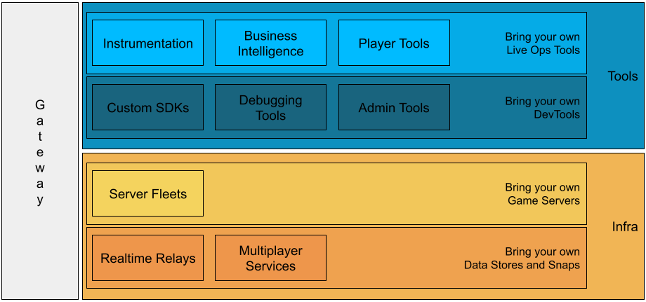
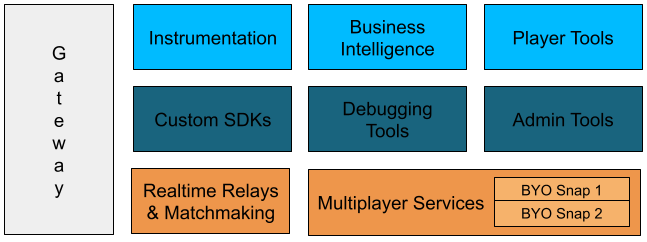
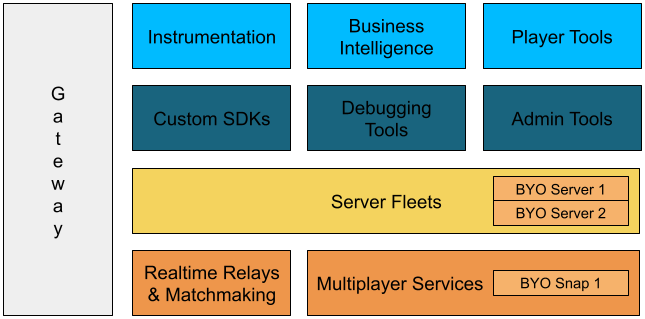

Archive note: all links and images have been disabled or removed as their destinations and/or source locations are behind a customer portal.
Written by Brian Immel on March 4, 2024
Snapser consolidates several essential features for backend game services into one unified platform, providing game studios through encapsulated building blocks known as Snapends, environments for the development pipelines, customization and scalability options, as well as comprehensive management and accessibility functionalities.
Empowerment: Snapser empowers game studios to create fully customizable backends effortlessly, catering to games of any genre. It serves as a comprehensive solution for backend needs, offering unparalleled ease and efficiency.
Modular: Snapser operates on a modular approach, where developers can select and integrate specific components, termed as "building blocks," tailored to their game's requirements. This flexibility allows for the creation of custom backends by choosing only the necessary components from the Snapser marketplace.
Snapend: A Snapend is a customized encapsulation of selected building blocks, forming a tailored backend solution for a game. Developers can seamlessly integrate their own code into the Snapend framework.
Development Pipeline: Snapser provides a robust development pipeline for managing game environments, including Development, Staging, and Production. Multiple Snapends can be created for Development and Staging environments, facilitating iterative testing and deployment processes.
Customization and Scalability: Game studios can bring their own code, data plane, and servers to Snapser, allowing for extensive customization. Additionally, Snapser offers scalability, with the ability to add new components or update existing Snapends as game requirements evolve.
Management and Accessibility: Snapser is a fully managed solution, with DevOps managing the backend infrastructure. It offers an enterprise plan for studios seeking complete control over their Snapser deployment. Moreover, Snapser is designed to be accessible to the entire game studio, with persona-based UX and tools catering to different roles within the organization.
Snapser offers a comprehensive suite of features that caters to every game's needs regardless of size or platform, with modular Snapends simplifying backend development, multiple Snapend management, and DevOps support, alongside tailored pricing plans for greater backend control and deployment flexibility, ensuring accessibility across the entire game studio.
In Snapser's architecture, developers utilize a modular approach, selecting and integrating specific components tailored to their game's needs. For instance, for an asynchronous multiplayer game, developers can choose functionalities like authentication, analytics, storage, and leaderboards from the Snapser Marketplace. Furthermore, they can incorporate custom features, microservices, or macroservices developed internally through the Snapser portal, enabling a customizable backend solution by seamlessly integrating desired components.
The following image illustrates an asynchronous multiplayer game with authentication, analytics, storage, and a leaderboard, supplemented by a custom feature engineered by the game's developers.
As the game grows, you decide to introduce a real-time multiplayer feature to your game. You can update your existing Snapend, incorporating everything from the previous step along with the real-time relay snaps. Consequently, you will have a new customized Snapend capable of supporting both asynchronous and real-time multiplayer features.
Some time later, you opt to launch a new game, significantly more ambitious in scope. This project necessitates multiplayer functionalities, a real-time relay, and authoritative servers. You can proceed to establish your own Snapend encompassing multiplayer services, a real-time relay, and a server fleet to meet these requirements.
